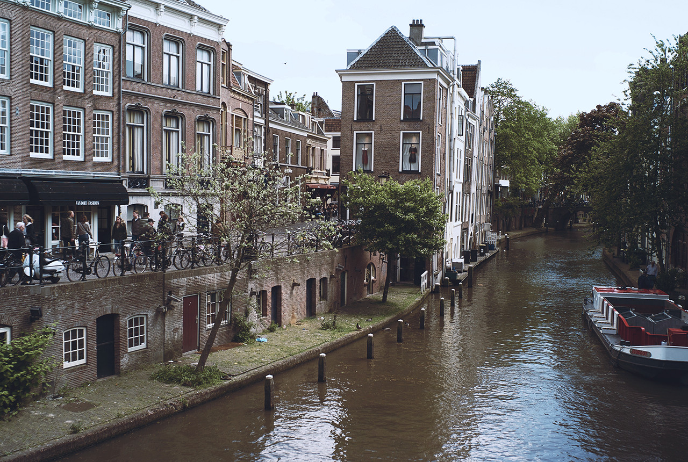
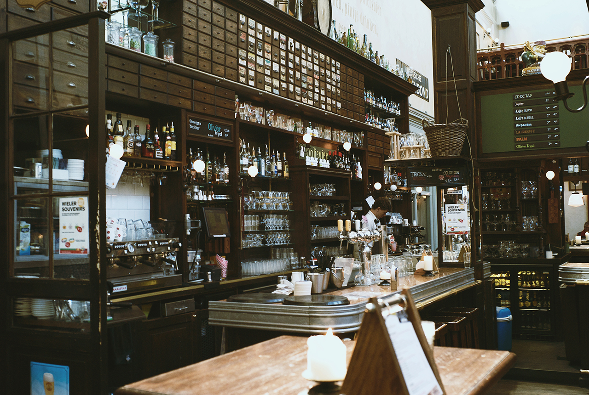
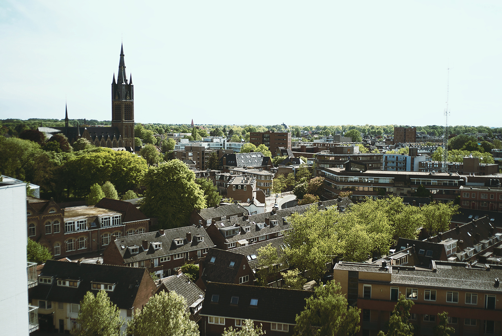

film
the sublime
personal
macro
black
infrared
travel
japan
fiji
marquesas
marshall islands
niue
mexico
france
new zealand
america
canada
germany
austria
czech
netherlands
Amsterdam
09J10
Trip to Netherlands in 2015 for Indievelopment.

Utrecht
09J09

Amsterdam
09J08

Travel to Utrecht
09J07
13L01
— Travel to Amsterdam, Netherlands
09J07
— Travel to Utrecht